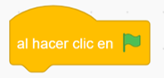
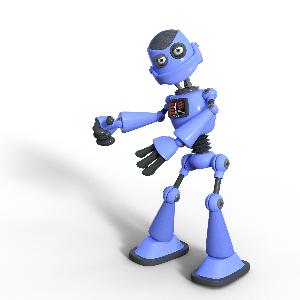
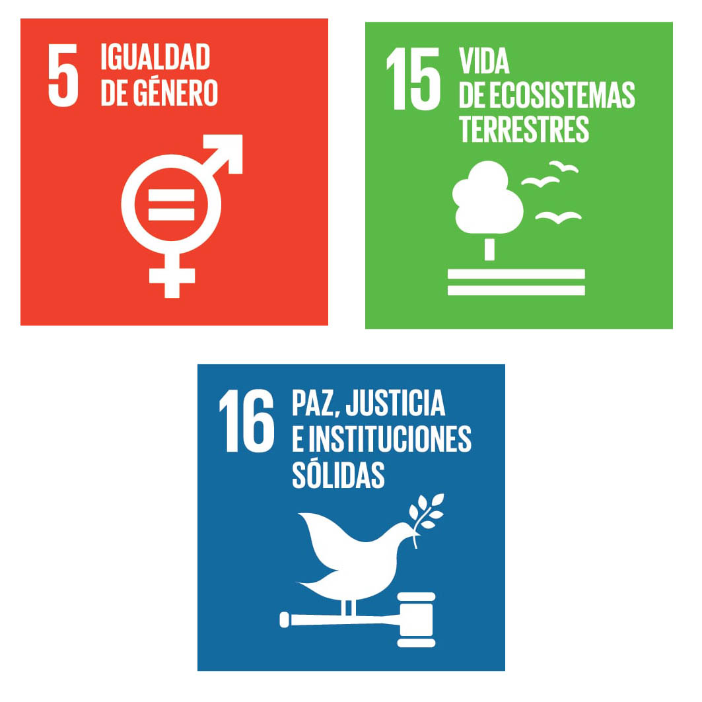
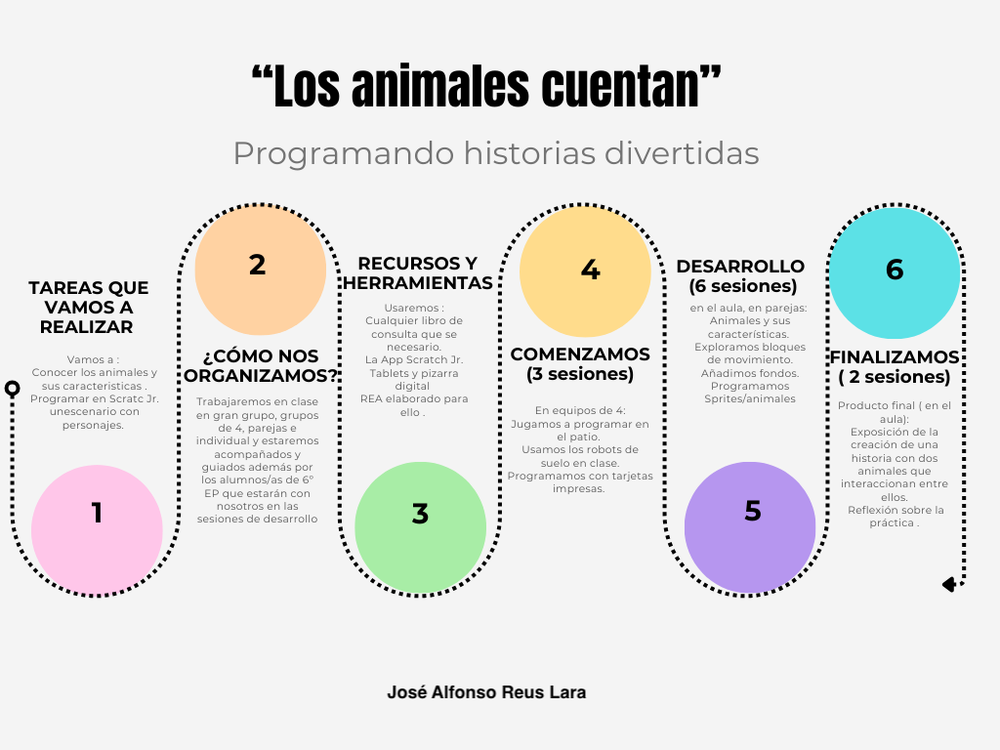

Diccionario
Bloques

Estructura de programación

Programación

1. Vamos a conocernos

¡Hola! ¿Cómo estás? Me llamo Bitto y voy a estar contigo durante toda esta aventura llena de descubrimientos. Mi misión es proponerte desafíos divertidos para que aprendas de forma entretenida. Asi que... ¡Empezamos!No te preocupes si es la primera vez que oyes la palabra "PROGRAMAR". Quizás pienses en videojuegos increíbles. ¿Verdad? pues vas por buen camino, porque eso es justo lo que vamos a explorar. Aprenderás un lenguaje de programación muy sencillo, perfecto para empezar. Presta atención a cada reto que te proponga. Te guiaré paso a paso.
¿Preparado para crear tu propia historia protagonizada por animales? ¡Va a ser genial!
Antes de empezar, debes contestar a algunas preguntas. No tienes que responder a todas, pero te invito a pensar un poco sobre ellas:
¿Que tipo de animal te gustaría incluir en la historia?
¿Dónde vive?
¿Qué come?
¿Cómo se comporta?
2. Qué vas a aprender
Vamos a aprender a programar en Scratch una serie de instrucciones que nos ayudarán a llevar a cabo nuestro reto y, además, estarás aprendiendo a:

- Crear una historia con animales
- Conocer las características más importantes de los animales.
- Conocer los principales de bloques de programación de Scratch.
- Conocer el entorno de Scratch: disfraces, escenario, objetos, movimientos.
- Contribuir al desarrollo de los objetivos de desarrollo sostenible (ODS agenda 2030) 5, 15, 16.
Bloques
3. Línea del tiempo
